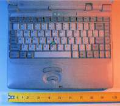
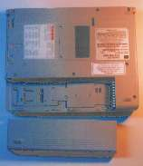
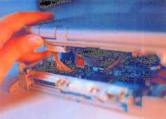
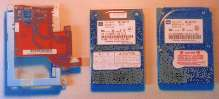
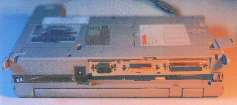

This is a brief description of my experiences installing a new hard drive in my T-3400. For a fuller (and more rambling) description, please click here.
The T-3400 comes with a 120 MB drive standard, which is small by most measures these days. Luckily, replacing the drive is straightforward and relatively easy. You must be willing to wield a screwdriver and split the case of your computer, and depending on your operating system, transferring the information from your old drive could be easy or difficult.
I replaced my old drive with a 540 MB version, but there's no reason (finance aside) not to get a bigger drive. Various reports have suggested that at least an 810 MB drive will work in the T-3400CT without replacing the BIOS [note: this information is now rather dated, but I suspect that the T-3400 BIOS will accept any drive an EIDE controller would accept]. If you're running DOS/Windows, you'll probably need to run something like the OnTrack Disk Manager (which came free with my drive), but I don't know that for sure -- I'm a *nix person myself. 
The physical procedure is fairly intuitive, and falls into three basic steps:
As you might imagine, steps one and three are basically the same, but in different order.
The first thing to do is make sure you have the appropriate tools assembled. You will need one small phillips (cross-head) screwdriver, a small flat-headed screwdriver for levering things, and you might want someone else there to help. You should make sure you're working in a relatively static-free environment, since static can reduce your $1000 computer to a pile of rubbish very quickly. This means grounding yourself if at all possible, and working when it's not too dry out. Even touching an electrical ground (such as a cold water pipe, the case of an appliance, etc.) once or twice during the operation should be enough. You should also make sure you have good light, since this is small work and hard enough as it is. A flashlight might be very helpful so that you can peer inside the computer before it's fully apart.
Next, make sure your computer is completely shut down, and not suspended. I have no idea what would happen with suspend engaged, but i'm sure you wouldn't see the contents of your memory again, and you might do worse things when it tried to resume... 
There are 11 (eleven) screws on the bottom of the computer which need to be removed. First take off the battery by unlocking it (if necessary) and releasing the catch; it slides out to the side (if it doesn't lift off easily, try sliding it a bit further). Put the battery somewhere out of the way; you won't be needing it until the computer is reassembled. 7 of the screws are visible with the battery on, and there are four underneath the battery.
Now, unscrew the various screws, placing them somewhere that you can remember their locations in the computer. There are three different lengths of screw, so you may want to place them in some special order. I used a piece of double-sided tape stuck to the table, and stuck the screws to the corresponding locations on the tape as I unscrewed them (ie, upper left corner screw goes in the upper left corner of the tape, etc.).
When you have all the screws out, you'll need to start levering the case apart. Do this slowly and carefully, since there are cables inside which you could damage. I started out by extending the angle-adjusting legs at the back of the computer and using them as handles to pull the back apart first. It might be easier to remove the PCMCIA slot's door (bend it slightly outwards until the pegs can be disengaged from the case) to get better access to the joint.
The case is held together by little tabs around the edges, which may need to be individually levered apart. I used my swiss army knife's can opener to do this, but any small flat-bladed screwdriver should work. The hardest parts for me were at the front, around the battery cavity and the charging light. To get the last bit around the light free required pushing with some effort against the plastic there. It also helps to twist the case halves very slightly in different directions, to disengage the tabs. 
Once you have the case halves separated, you have to disconnect four cables which run from top to bottom. From the back of the machine, you see (from left to right) the monitor cable, the keyboard cable, the indicator cable, and a hard drive cable of some sort. The monitor cable can just be levered out of its socket with a screwdriver, but the other three cables require that you unlock the sockets. To do this, locate the sockets, and find the bit that lifts up. These need to be lifted up to release the flat cables attached to them. The procedure is the same for all three cables, although you might want to have a second person around to help for the hard drive cable.
Once you have the halves of the computer separated, gently set them down and proceed to step two.
You should now be able to see the hard drive, in the rear left corner (from the front of the computer). There are (I think) three screws to undo, then you can lift the hard drive cage out of the case. Be careful to keep these screws separate, as they are yet a different length from those holding the case together. You'll also need to disconnect the stub cable on the cage from the motherboard. 
Once the cage is free, disconnect the stub cable from the old hard drive, and unscrew the cage from the drive. Installing the new drive is basically the exact reverse of this procedure.
Once the cage is connected to the case again, resealing the computer is essentially the reverse of taking it apart. You'll want to make sure that you re-seat the flat cables carefully, and lock them down properly. They can cause problems if incorrectly installed. (Notably, I had my indicator lamps flashing when I typed -- very annoying.)
For reassembly, you'll definitely want to have a friend to help, and a nice strong light shining over your shoulder. Have your friend hold up the screen-and-keyboard half of the case while you re-connect the cables, and things will be much easier. If you slide the top half of the case backwards, you can get a bit of slack on the cables, which makes things easier. 
Once you have the cables re-connected (and you might want to turn on the computer and make sure that they work like you expect, before you snap the case together), snap the case halves together. If you haven't already tested to see that it turns on, do this now, so you don't have to re-do too much work. If all runs as expected (remember that you don't have an operating system on your disk at the moment, so it's not going to boot from the hard drive), you've succeeded at your task.
Taking care to use the right screws in the right places, screw your computer back together. Slide the battery back into place, and pour yourself a glass of champagne to celebrate your new, much quieter hard drive, and the amazing feeling of space you get from having quintupled (or more) your previous disk space.
To get a description of my method of transferring information between the old and new drives, check here. Note that I'm using Linux, so the procedure I outline will not work for Windows or OS/2. There are data transfer products on the market which can ease the task, and you should investigate those if you're not running a *nix system.
{kind=link}
{kind=link}
{kind=link}
{kind=link}
{kind=link}
{kind=link}
{kind=link}